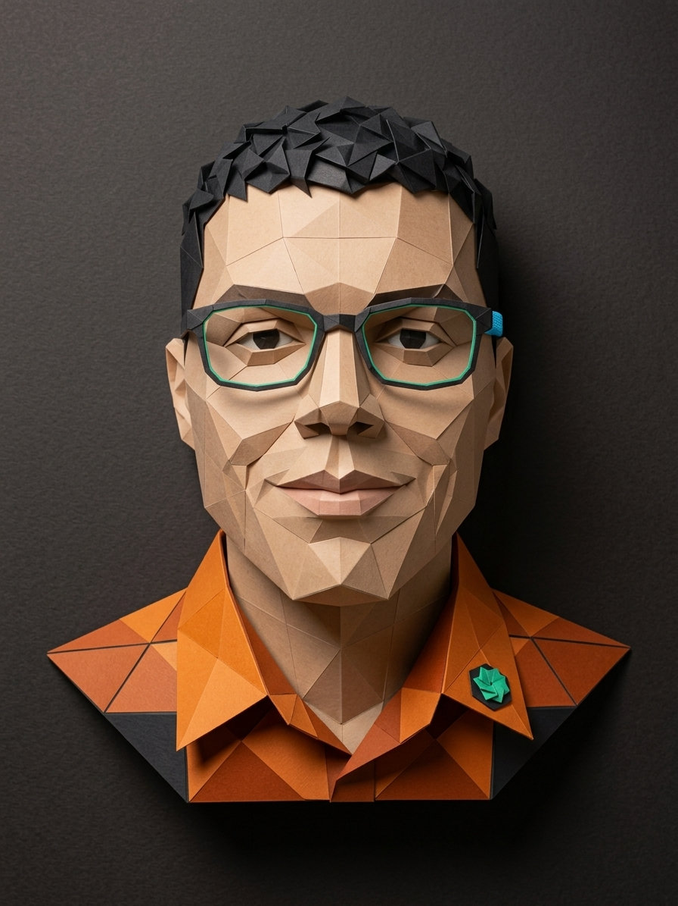

Navegación por Teclado Completa
Diseño cada flujo para ser 100% operable sin ratón, con anillos de enfoque visibles
(:focus-visible) y enlaces de salto rápido para lectores de pantalla.
Full Stack Developer Jr.
Desarrollador de software enfocado en crear aplicaciones web funcionales, robustas y universalmente accesibles (WCAG 2.2 AAA). Especializado en backend con Java & Spring Boot y frontend interactivo con JavaScript, garantizando que el software pueda ser utilizado por cualquier persona, sin importar sus capacidades.

Diseño cada flujo para ser 100% operable sin ratón, con anillos de enfoque visibles
(:focus-visible) y enlaces de salto rápido para lectores de pantalla.
Priorizo la semántica nativa de HTML5 y aplico atributos ARIA únicamente donde la interactividad compleja lo requiere, evitando barreras de código inaccesibles.
Garantizo relaciones de contraste de color superiores a 7:1 y respeto las preferencias
del sistema del usuario como prefers-reduced-motion.

Digitalizó los pedidos y ventas en línea de una cafetería en la CDMX.
Implementé un carrito interactivo accesible mediante lectores de pantalla
(NVDA/JAWS),
anuncios dinámicos mediante aria-live="polite" al agregar productos y
alto contraste de color optimizado para baja visión.

Sitio promocional de una tienda deportiva enfocado en la conversión de clientes y rendimiento web. Mantuvimos interactividad y animaciones accesibles, optimizando la experiencia de usuario. Construido con una jerarquía de encabezados semántica impecable.